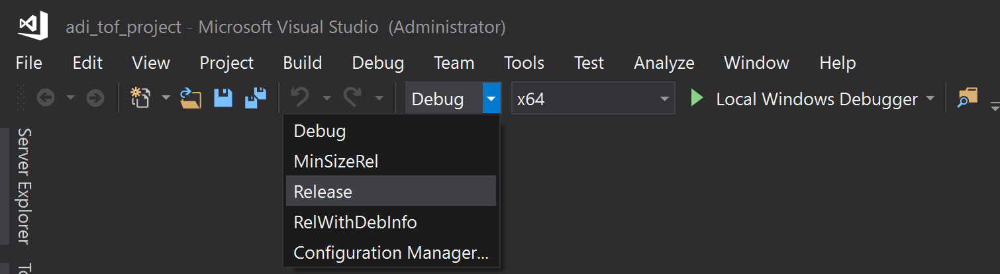
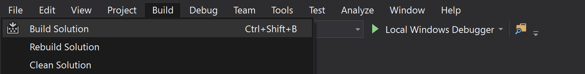

Windows Build Instructions
Building libaditof
Dependencies
Install MS Visual Studio 16 2019
Install MS .NET Framework 4.5
CMake
Glog v0.6.0
Libwebsockets v3.1
Protocol Buffers v3.9.0
Windows installer can be downloaded from: https://cmake.org/download/
Build and Install Dependencies manually (OPTIONAL) [Click]
Glog:
git clone --branch v0.6.0 --depth 1 https://github.com/google/glog
cd glog
mkdir build_0_6_0 && cd build_0_6_0
cmake -DWITH_GFLAGS=off -DCMAKE_INSTALL_PREFIX=./local_path/glog -G "Visual Studio 16 2019" ..
cmake --build . --target install --config Debug
cmake --build . --target install --config Release
Libwebsockets (OPTIONAL, only if not using submodules):
git clone --branch v3.1-stable --depth 1 https://github.com/warmcat/libwebsockets
cd libwebsockets
mkdir build_3_1 && cd build_3_1
cmake -DLWS_WITH_SSL=OFF -DCMAKE_INSTALL_PREFIX=./local_path/websockets -G "Visual Studio 16 2019" ..
cmake --build . --target install --config Debug
cmake --build . --target install --config Release
Protobuf (OPTIONAL, only if not using submodules):
git clone --branch v3.9.0 --depth 1 https://github.com/protocolbuffers/protobuf
cd protobuf
mkdir build_3_9_0 && cd build_3_9_0
cmake -Dprotobuf_BUILD_TESTS=OFF -Dprotobuf_MSVC_STATIC_RUNTIME=OFF -DCMAKE_INSTALL_PREFIX=./local_path/protobuf -G "Visual Studio 16 2019" ../cmake
cmake --build . --target install --config Debug
cmake --build . --target install --config Release
If you do not use the submodules and have installed the dependencied (Glog, Protobuf, Libwebsockets) manually, make sure to add the install directories of Glog, Libwebsockets and Protobuf to the CMAKE_PREFIX_PATH directory of your system.
CMAKE_PREFIX_PATH="C:\projects\ToF\deps\glog\build_0_6_0\local_path\glog;C:\projects\ToF\deps\protobuf\build_3_9_0\local_path\protobuf;C:\projects\ToF\deps\libwebsockets\build_3_1\local_path\websockets"
Download and build libaditof
Follow below steps to download the SDK, generate MS Visual Studio project and build it directly from command line
git clone --branch v5.0.0 https://github.com/analogdevicesinc/libaditof
cd libaditof
git submodule update --init
mkdir build
cd build
cmake -G "Visual Studio 16 2019" ..
cmake --build . --config Release
Building the SDK in Visual Studio using the script
Pre-requisites
None
Steps to build the SDK
Run the script located in: ‘ToF\scripts\windows’ with the suitable configuration parameters.
The following example runs the script with generator Visual Studio 16 2019 and configuration Release. The sdk will be built in folder: current_script_path\build and the dependencies will be installed in folder: current_script_path\deps\installed. Use parameter -h or –help for more information regarding the parameters.
.\setup_project.bat -g "Visual Studio 16 2019" -c Release
Open ‘adi_tof_project.sln’ generated in current_script_path\build in MS Visual Studio.
Select the configuration to match the configuration used in the script. (e.g.,Release) for build.

The sdk Dynamic-link library (aditof.dll) is created in: current_script_path\build\sdk\Release.
Build the application.

Generate doxygen documentation
Requirements:
Doxygen
Graphviz
In order to generate the doxygen documentation you must compile the sdk in the following way:
cmake -DCMAKE_PREFIX_PATH="C:\projects\ToF\deps\glog\build_0_6_0\local_path\glog;C:\projects\ToF\deps\protobuf\build_3_9_0\local_path\protobuf;C:\projects\ToF\deps\libwebsockets\build_3_1\local_path\websockets;C:\projects\ToF\opencv\build" -G "Visual Studio 16 2019" -DOPENSSL_INCLUDE_DIRS="C:\OpenSSL-Win64\include" -DWITH_DOC=on ..
cmake --build . --target doc -j 4
After compilation, the documentation can be found at this path:
build\doc\doxygen_doc\html\index.html